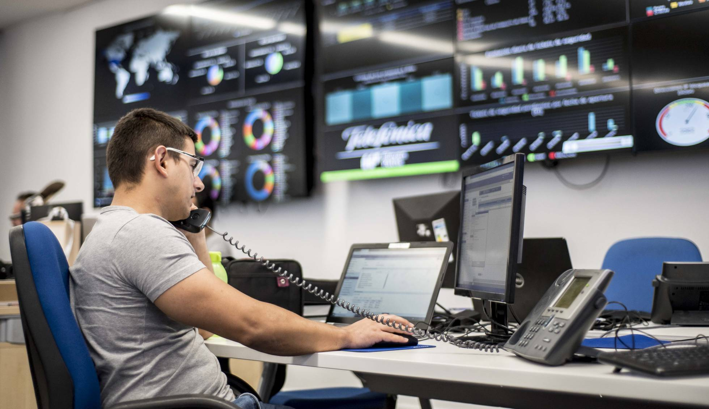

Por fuera parece otro edificio de oficinas del barrio madrileño de Ciudad Lineal. Pero las medidas de seguridad de su control de acceso dejan clara la importancia de las labores realizadas dentro del centro de operaciones digitales (DOC) de Telefónica Empresas, que opera las 24 horas de los 365 días del año. A lo largo y ancho de 2.000 metros cuadrados, más de 750 expertos de diversas disciplinas buscan sinergias con un objetivo común: garantizar la continuidad del negocio de más de 1.500 clientes corporativos, entre los que se encuentran la mayor parte de las entidades del Ibex y de la Administración Pública. Inmersas en la era de internet, estas organizaciones encuentran en el DOC una ventanilla única que atiende todas las peticiones sobre las posibles incidencias de los servicios digitales que han contratado y que blinda sus plataformas ante ciberataques, incluso anticipándose a ellos. Para tener esa visión global de todas las soluciones de negocio del cliente, en este sitio convergen las labores del command center (centro de incidencias críticas), que garantiza el servicio en la nube), del security cyberoperation center (un espacio de inteligencia contra los ataques informáticos, conocido bajo las siglas SCC), y del equipo de gestión de servicios IoT. Además, durante el primer trimestre de 2020 se incorporará el área de digital workplace, que resuelve incidencias de las herramientas de trabajo digitales como dispositivos móviles y plataformas de comunicación y colaboración. La interconexión de estos cuatro pilares del DOC implica que los avisos detectados en un área alertan de amenazas en otra con el fin de anticiparse a cualquier problema. Por ejemplo, un mensaje de error en un dispositivo de IoT monitorizado alerta sobre un fallo de seguridad más grave que puede extenderse a otros equipos. O una incidencia en un puesto de trabajo digital avisa de un problema en la red corporativa. Así, Telefónica Empresas ofrece a las compañías una visión de 360º sobre el estado de sus negocios.
Microsoft Corp. ha publicado IoT Signals, un nuevo informe que proporciona una visión global sobre el Internet de las Cosas en la actualidad. Para llevar a cabo este estudio, Microsoft ha entrevistado a más de 3.000 responsables de IoT de diferentes empresas con el fin de ofrecer una visión holística del ecosistema del IoT, incluyendo porcentajes de adopción, las tendencias tecnológicas relacionadas, y también los beneficios y los retos que el sector tiene por delante. El informe señala que la adopción de soluciones de IoT está creciendo rápidamente, tanto que los encuestados creen que en dos años el 30% de los ingresos de su empresa dependerán del Internet de las Cosas. Sin embargo, esta industria se enfrenta a un importante déficit de conocimientos en la materia, así como a retos de complejidad y seguridad que, si no se abordan, pueden comprometer los beneficios empresariales previstos.